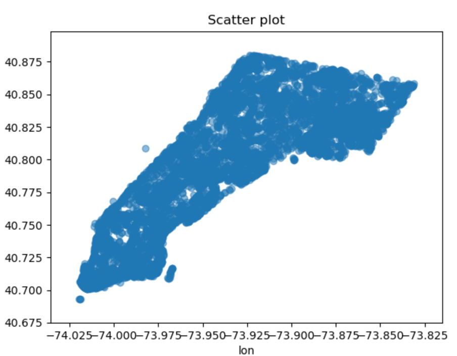
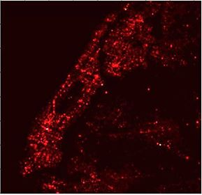
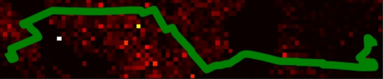
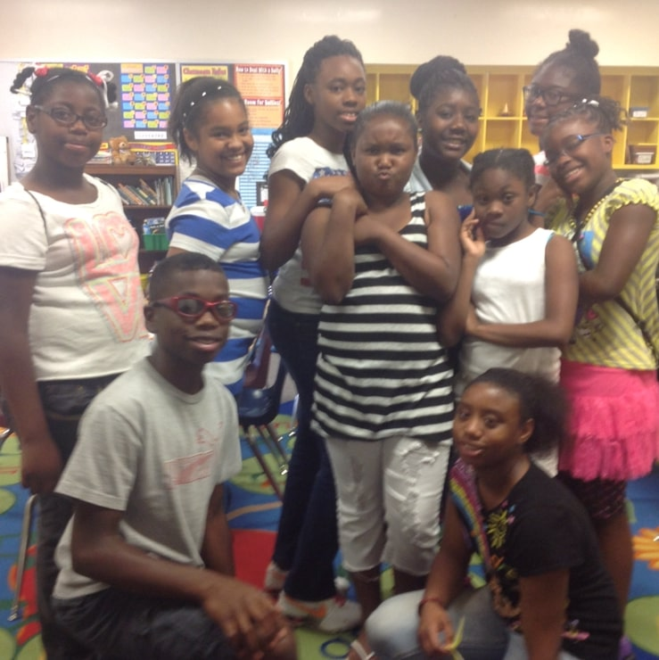
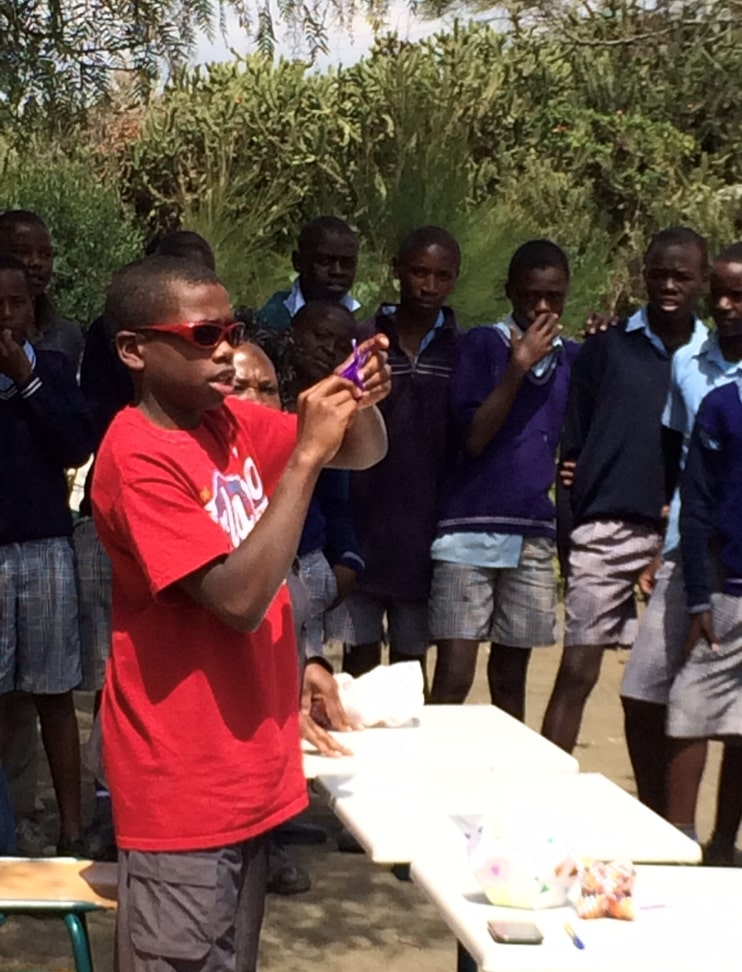
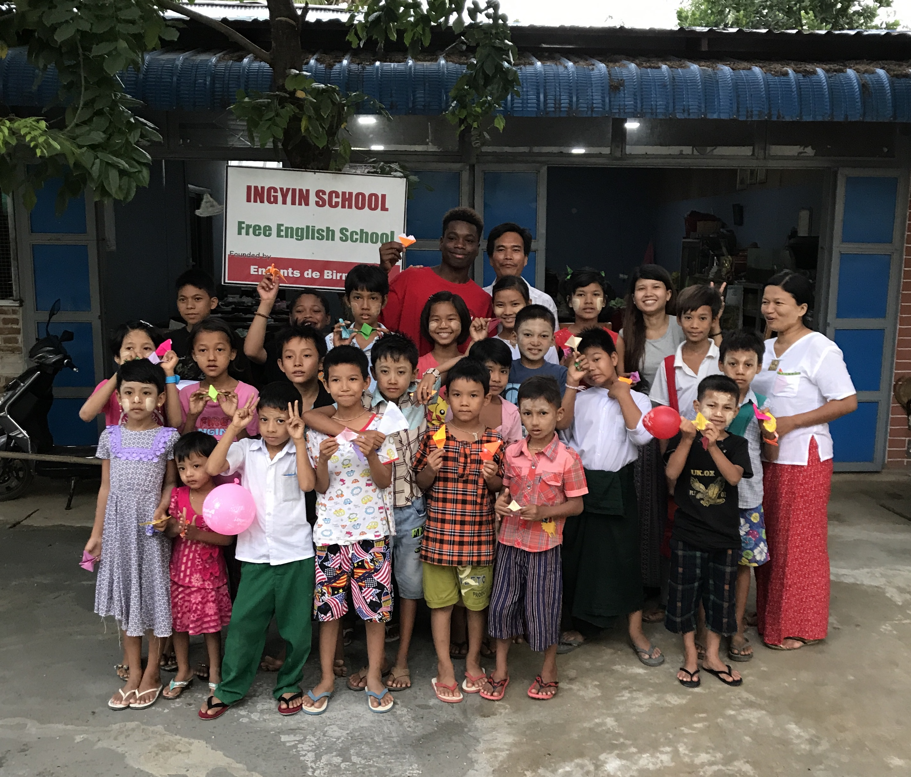
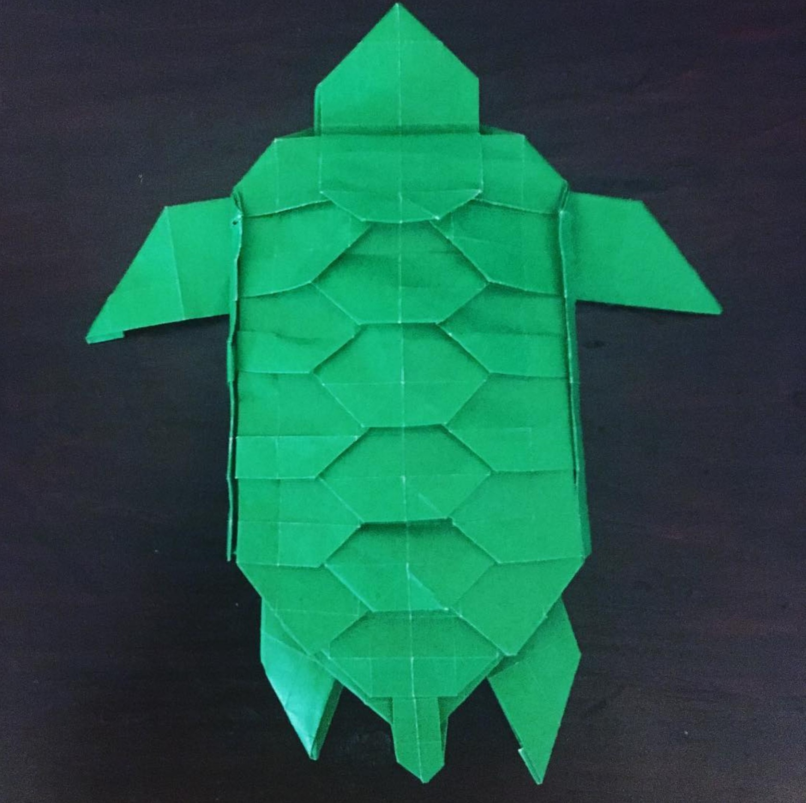
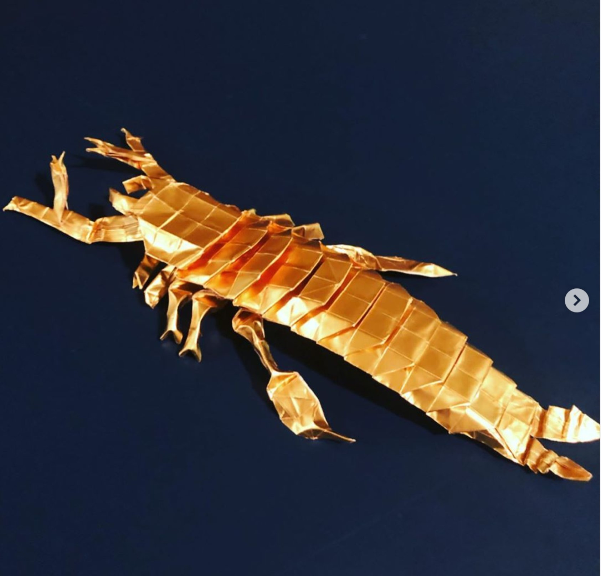
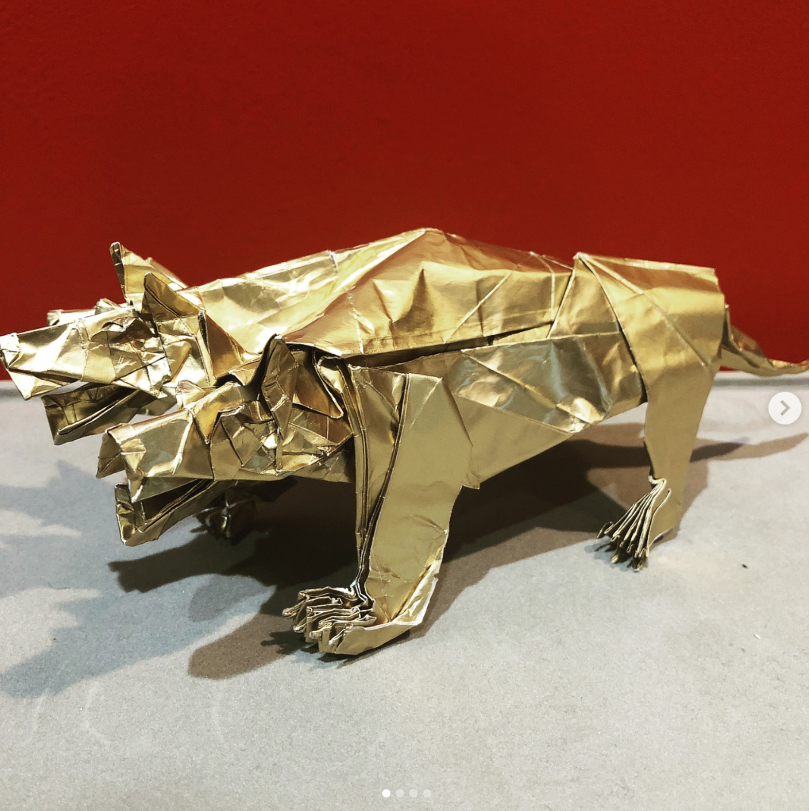

AP Calculus BC, Multivariable Calculus, Differential Equations, Complex Analysis, AP Physics C Mechanics, AP Physics C Electricity and Magnetism,
Artificial Intelligence, Web App Design, Mobile App Design, AP Economics
Other Info:
3 year Varsity Basketball Player, captian Senior year
Created a program that allowed for advanced statistics on basketball games to be kept, like best lineups in terms of plus minus
Vice President of Future Business Leaders of America
Helped create a Science program where students from a local middle school would participate in fun Stem projects every other weekend
Executive Board member of the Origami Club(2020-2021 Year)
Fiat Chrysler Automobiles Internship
Summer 2020
Problem: Every day, workers don't show up to manufacturing plants without notice, forcing managers to estimate how many temporary workers to hire each day in order to keep the plant running at 100% efficiency
My Specific Goal: Improve the model already in place that predicts the amount of absenteeism on any given day at a given plant
Solution(Use of Meta Analysis):
In addition to variables like day of the week, added cross referenced variables from other plants
cross referencing plant data adds stability to each individual model
Tentative results looked promising, project continued by data science team after I left
Facebook Internship
Summer 2021
Right now I am planning on interning at Facebook in Summer of 2021. I will update this section after the internship is complete
General Overview: Battlecode is an MIT AI competition run every year throughout the month of January. At the beginning of the month, they release a new 2 player game in java, at which point teams have to code up a bot that plays said game. There are multiple Tournaments throughout the month, ending in a tournament for the top 16 teams out of the hundreds that submit code for cash prizes
Overview of 2020 Battlecode Implementation(3 Musketeers)
We used a superclass called robot that had method that all different robot types needed, and extended this class for each specific robot type that we needed to make
Our Enlightenment Centers, or towers that were stationary but actively could make other towers, used a Stack to store different States. With this in place, we could switch from a state like
Default to defending, while pushing Default to the stack. Once we were done defending, we could pop the State Stack and go back to Default mode. This allowed us to do a lot of tasks as intermediates while still haveing main tasks
We used priority queues that stored locations of enemy bases, giving priority to those that had the least amount of money, to effectively take over enemy bases when possible
We used bit manipulation to communicate between towers, which all had 24 bit flags that robots in sensor radius could see
Conclusion/Lessons Learned:
In the end, our team placed 9th out of over 200 teams that submitted code
Some important lessons learned include:
Sometimes complex isn't always better. Some of our simplest and most easily changeable code worked best for us
Careful and precise troublshooting is super important. Sometimes we had bugs that made our code severely worse that could only be found with frame by frame inspection of games
Don't be afraid to gain insight from others/restart large parts of the code. Sometimes our strategy just wasn't great, and restarting with new knoledge lead to huge improvements fairly quickly
Find the real problem. A lot of times we tweaked parts of our code in hopes to fix a problem that was in a completely different section. It's important to ask yourself what's wrong before trying to find optimizations to fix it.
Example Game:
This is a game played against Monky that we won. Monky ended up finishing 5th out of all competitors. For a better idea of what's going on here, read the full post mortem linked above
Problem: Walking alone in big cities can be risky in areas where crime is prevelent
Goal: Create a program that, given a start and end location, gives a user the safest timely walking path to their destination. We used Manhatten
as a test area since they had a lot of crime data for us to use.
Solution:
First, we downloaded all street nodes from OSM, a mapping API. Next, we assigned each node a value based on the amount of crime in the area.
Given a path, would then run an A* search on the start and ending nodes, with the weight of each node being the crime rating we had assigned.

All Nodes used for our A* Search

Heatmap of Manhatten, with red/brighter areas representing more crime

Optimal Path in green overlayed by heat map of crime
Predicting Football with Linear Algebra(Full Paper)
Goal: Accurately predict an NFL playoff bracket given regular season data
Different strategies:
Try to find rankings of teams, such that for every game between teams i and j, the difference between team i's score and team j's score is equal to their difference in ranking
Create a matrix that is 32 by 32, such that every entry Aij is equal to the total number of points scored by team i against team j, with some normalization.
Next, try to find some strength vector S such that, when multiplying A by S, we get another proportional vector. This becomes an equation where we can use eigenvalues and eigenvectors to find a solution
Conclusion:
In the end, the first of these two methods was the most accurate, but only after taking all nonzero terms in our matrix and making them small values like 1^(-15)
Able to predict superbowl winner as first or second best team for all three years tested on (2010, 2011, 2013)
Able to predict upsets, when higher seeded teams lost early on
ARailRoads
Simple implementation of A*. Given two cities, finds the fastest route by train, animating the process of finding the route. Here's an example path from Seattle to Miami:
Teaching
Teaching Origami Across the World:
My first experience with teaching came when I was in eighth grade, and I taught a week long camp on origami to some middle schoolers.
We learned how to fold a simple five-fold cup, then went on the more advanced models like a heart and a crane. It was a great experience and
piqued my interest with teaching as a whole.
Over the next several years, I was able to teach origami across three continents. As of now, I still teach some models at CMU's origami club.

Me in 8th grade teaching origami to kids in South Carolina

Me in 9th grade teaching origami to kids in Kenya

Me in 10th grade teaching origami to kids in Myanmar
Teaching Math and Science to younger students:
I wanted to take my newfound interest in teaching further, so in high school I joined a program where
students would go to local elementary/middle schools every week, and gave students extra help in math or science. I really enjoyed it, so I participated
in this program for three out of my four years in high school.
My junior year, I helped start another program where underrepresented minorities would come
to our high school every other weekend, and participate in fun lab or science games to be exposed to how fun STEM can be from a young age.
These experience taught me that when teaching, the most important thing to notice is how your student
learns/understands information. This idea is especially important with younger students, since something like addition, which may seem intuitive to you, can be tricky or
daunting to them.
Teaching Higher Level Topics(Math, Java, Python, and AI):
In order to continue what had at this point become a love of teaching, My senior year of high school I tutored students one on one in Java and Python. My Java students
had never seen code before, so my goal with them was to get them to think like computer scientists, and see the field as a fun new challenge instead of a daunting ocean of danger.
I also taught students with a solid python background some basics in AI, like Breadth and Depth First Search, how to
make an AI that can smartly solve a sudoku board, and rudimentary neural nets from scratch(No libraries allowed!)
In the Fall of 2020, I am TAing 15-151: Mathematical Foundations for Computer Science at CMU, an introductory
discrete math course that all freshman computer science majors have to take, and I'm planning to TA more classes in the future!
Teaching At A Collegiate Level:
After my freshman year at Carnegie Mellon, I knew that I wanted to go into teaching at a Collegiate level. While this was informal in my first year, through simply helping out my peers with coursework that
we were both taking at the same time, my Sophmore year I decided to become a TA in 15-151, Carnegie Mellon's introductory discrete math course, and a tutor for 15-251, Carnegie Mellon's discrete math/proof course for computer
scientists. I chose 15-151 specifically since it is a course taught to school of computer science freshman, in molds how the view problems and problem solving, and how to handle college classes in general.
Origami
Models
I've been folding origami for over a decade now, and over time I've been able to become skilled enough to fold some great models. Nowadays I do most of my folding at CMU's origami club.
Here are some of my favorites from my Origami Instagram Page:

Turtle

Sea scorpion

Cerberus, three headed dog
Writing
From 2016-2018 I wrote and edited for The Paper, a national Origami Magazine. In addition to miscellaneous articles, I
wrote a column on young origamists in the field. Here's a sample:
I've been playing basketball since I was very young. In high school, I played on the varsity team for three years and was
captain my senior year. My freshman year of CMU, I played on the club basketball team as a shooting guard averaging over 15 points a game and played on the SPIRIT IM team as well.